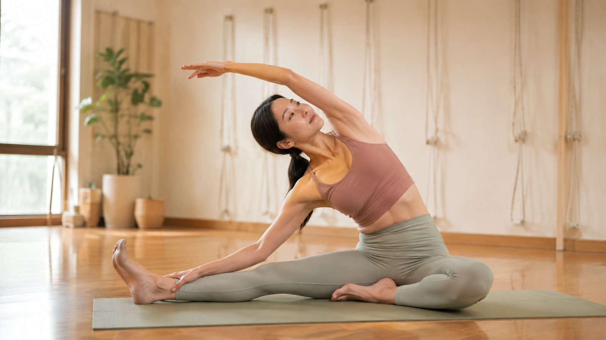

壁繩瑜伽練多久會有感？先看懂進展，不急著套時間表

- 沒有人人適用的「幾週改好」時間表；先分清楚自己期待的是舒服、動作更好掌握，還是外觀變化。
- 一次放鬆、照片角度與日常功能是不同訊號，需要分開看。
- 選一件在意的日常小事做記錄，再和老師討論練習內容是否需要調整。
「我已經開始練了，什麼時候才會不一樣？」你可能不是想追求很大的改變，只是希望穿外套、坐著工作或站著聊天時，不用一直顧著自己的身體。這份期待值得被說清楚，但不能用一張固定週數表替每個人回答。
先分清楚：你想要哪一種「有感」？
下課覺得鬆一點、某個動作比較知道怎麼做、日常活動比較不費力、外觀有所不同，並不是同一件事。先說出最在意的那一項，才知道該觀察什麼；不要因為別人說第一堂很舒服，就把自己的陌生感當成落後。
當下舒服，可以記下來，但不用當成成效保證
有些人當下感覺輕鬆，有些人先感覺到不熟悉。不能從這一堂的反應推算幾週後會怎樣，也不宜直接把舒服解釋成某個結構已經改變。NCCIH 整理的瑜伽研究涵蓋不同課程與族群，不能替本館壁繩課訂出統一見效期限。
比固定週數更有用的，是同一件小事是否改變
選一件你在意的事，例如穿外套時是否比較好安排手的位置、站著時是否一直想夾肩、上課時能否自己找到可掌握的幅度。這是方便溝通的觀察，不是醫療測試。記錄「比較容易／差不多／比較吃力」以及當天情境，不必每天給自己打分數。
我想觀察＿＿；這次做起來＿＿；當天睡眠或活動量＿＿；下次想問老師＿＿。
照片可以輔助，但角度不能包辦所有答案
若用照片或檢測比較，盡量保持相近的拍攝方向、距離與站姿條件。一次刻意站直、一次自然站著，本來就難以直接比較。數字與外觀是參考，不能單憑角度認定肌力增加、症狀原因消失，或把所有日常功能的變化歸功於課程。
練了一陣子沒有明顯變化，先討論這三件事
第一，期待和實際課程內容是否相符；第二，目前幅度與負荷能否掌握；第三，課外的活動、休息與生活負荷是否有變。這些問題用來調整安排，不是把責任推給你「不夠認真」。增加頻率也不應成為唯一答案。
若是反覆不適增加或影響日常，應先尋求適當評估，而不是繼續等待某個週數到來。已經練一陣子、想討論停滯，可看練習卡關時怎麼整理問題。
第一堂後，先判斷這個開始方式適不適合你
你不需要靠一堂課證明自己會改變。先確認老師的說明聽得懂、可以表達不舒服、時間與交通能持續。這部分可接著看第一堂上完，怎麼知道這間教室適不適合我。
本文為一般運動與身體觀察資訊，非醫療診斷或治療；持續或加劇的不適、近期受傷與特殊健康狀況，請先向合格醫療專業人員詢問。
常見問題
第一堂沒有放鬆感，代表沒有效嗎？
不能只憑一堂課下結論。先看是否能理解指導、調整幅度與表達感受；當下放鬆不是判斷課程適合度的唯一指標。
練三到六週就一定會變順嗎？
不能保證。起點、實際練習內容、負荷與生活狀況不同，沒有適用所有人的固定週數。
照片角度改善，就代表身體功能進步嗎？
不能直接畫上等號。拍攝條件會影響比較，還需對照日常活動、練習感受與需要時的專業評估。
可以用哪些方式記錄進展？
選一項日常活動，記錄完成時的感受、是否需要硬撐，以及反覆不適的頻率；在相近條件下回顧，供後續溝通，不用把紀錄當診斷。